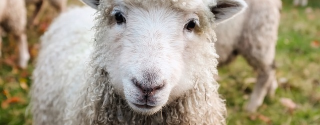

Test it!
Bellow this card, you can click on the button. A little modal will be displayed to ask to the user his/her instance.
Easy to use
It's so simple than my grandmother is able to add these buttons.
Just include mastodon.js, set the configuration and add your button.
Keep the liberty
Mastodon Share Button is very customizable. Keep your freedom by customizing the text, the button or adding a button.
It works without any library. No tracker included, just a button.